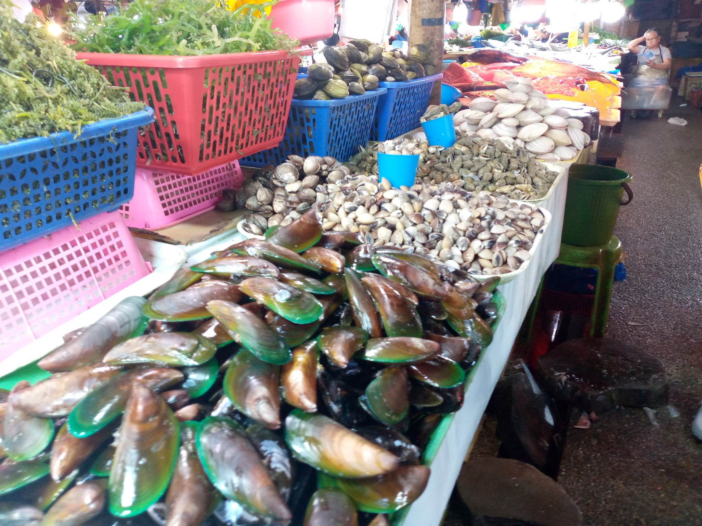

GALUNGGONG
Price per kilo: Php 230
(size may vary)
Price per kilo: Php 150
Mackerel scad can be considered gamefish, they are usually used as bait. They are popular for consumption in Hawai'i,
the Philippines and the U.A.E. In Hawai'i, mackerel scad are called ʻopelu.
Best to cook as: paksiw, pinirito,ginataan

KINASON
Price per kilo: Php 200
A seashell or sea shell, also known simply as a shell, is a hard, protective outer layer usually created by an animal or organism that lives in the sea.
Best to cook as: ginataang kinason, tinolang kinason